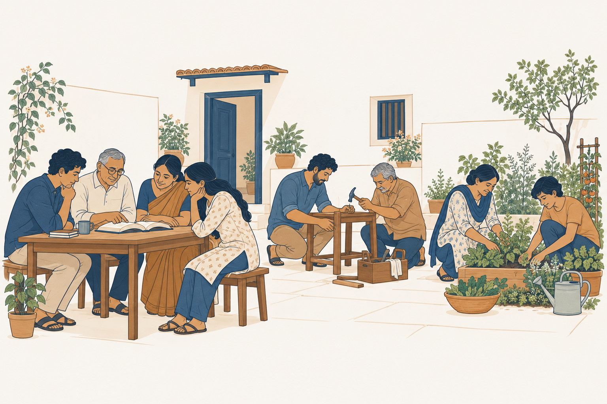
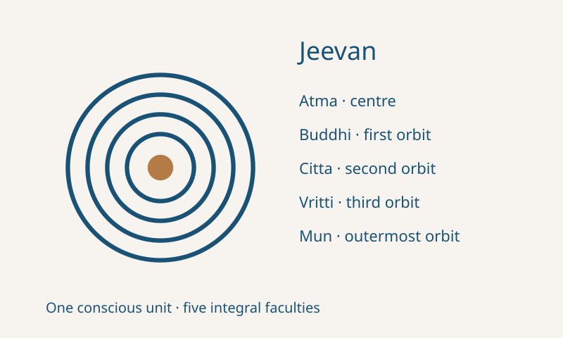
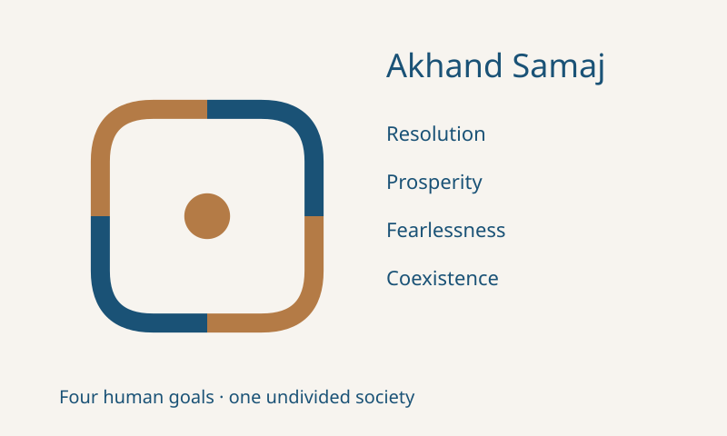

Jeevan · J1
Atma at the centre; buddhi, citta, vritti and mun in four successive orbits.
32 px
MADHYASTH DARSHAN · SHARED VISUAL THEME
One family for the study website, teaching decks and waiting states. Jeevan J1 and the continuous Akhand Samaj bond, now with a golden nucleus.
Atma at the centre; buddhi, citta, vritti and mun in four successive orbits.
Four equal connected sections for the human goals, with your requested golden centre.
The Akhand Samaj centre is an identity element, not a fifth human goal. Goal labels remain necessary in explanatory uses.
Rounded linework and restrained gold accents. Topic icons retain labels; interface icons describe familiar actions.
Visible identity in the header, a quiet human illustration, and subject icons beside the study titles. This is a layout specimen.
AN OPEN COMPARATIVE INQUIRY
Explore existence, knowledge, value and human participation.

The body, the knower and the human question.
Knowledge, understanding and evidence in living.
Resolution, prosperity, fearlessness and coexistence.
Retain Cambria titles, Calibri text and the existing deck grids. Use the identity once per cover or section, and topic icons where they clarify the subject.
These are visual specimens, not modified teaching slides. Existing content, citations, comparison colours and speaker notes remain authoritative.
A steady nucleus and gentle changes in line opacity. No spinning atom or implied progress percentage.
Reduced-motion settings show static marks. Each real loading state needs task-specific text, completion handling and an error path.
Use labelled compositions for concepts and editorial scenes for everyday participation. Keep the two purposes distinct.


AI-generated editorial illustration; not a photograph or documentary evidence.
| Current pattern | Shared treatment |
|---|---|
| Different atom-like motifs in decks and assets | J1 with four rings; A1 with four sections and a centre |
| Handshake, cycle and gear reused for unrelated concepts | Eye for understanding, compass for discernment, flask for scientific inquiry; always labelled |
| Shield used for fearlessness | Equal people in mutual confidence; reserve shields for protection/security |
| Mostly typographic website and social images | Visible identity, study-topic icons and a consistent editorial illustration |
| Waiting conveyed chiefly through text/disabled controls | Small branded motion beside the existing status text |
Review covers 8 decks / 192 slides at contact-sheet level, with selected icon-bearing slides examined at full size, plus the local website and loading-state sources.